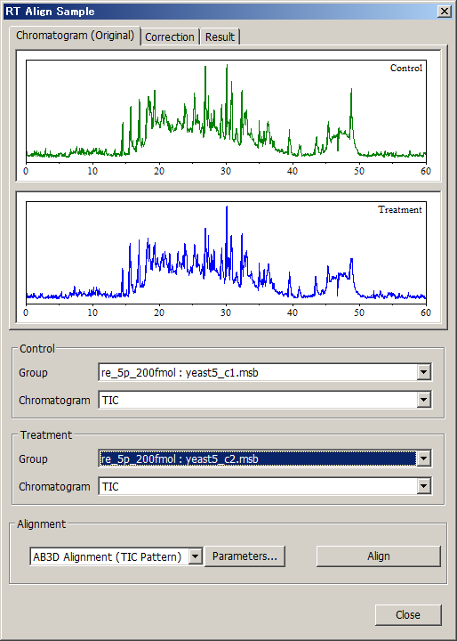

Open two samples.
Select [Processing] in the menu bar and then select [Advanced Data Manipulation] > [RT Align Sample] from the drop down menu.
The RT Align Sample dialog appears.
The RT Align Sample dialog can also be displayed by clicking the
 icon in the toolbar.
icon in the toolbar.
Select the Control and Treatment samples from the drop down lists.
Click [Align].
The chromatogram of the Treatment sample aligned by the RT values of the Control sample is displayed in black in the [Result] tab, and the correction curve is displayed in the [Correction] tab.